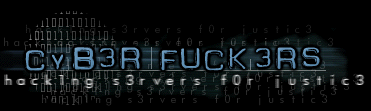
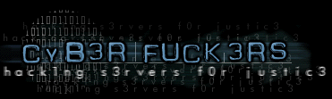

Valew pelo logo manow Bruce Dickinson
Isso eh justo?!


Valew pelo logo manow Bruce Dickinson
Isso eh justo?!
Sobre a paz mundial
O mundo hoje não é a mesma coisa que será amanhã, esta é a primeira idéia, e temos
que ter consciência disso. A segunda principal idéia é que para que amanhã o mundo
possa ser melhor do que é hoje, isso depende de nós, que somos jovens hoje e temos que
olhar o péssimo exemplo de exploração e preconceito que as grandes potências mundiais
estão dando e aprender com eles que isso não dá certo.
As guerras mundiais serviram apenas
para definir quem são os ricos e quem são os pobres, o que aumenta a desigualdade entre
povos, e dentro das nações também.
O que me deixa mal é pensar que cada país tem sua cultura, seu folclore, sua música,
seus artistas, e que todos, o mundo inteiro, poderíamos usufruir disso para o bem, nos
unir para ser mais fortes, e depois de montar esta estrutura buscar algo (ou alguém) fora
daqui que talvez pudesse ter-nos como exemplo para seu próprio desenvolvimento.
O fato é que as pessoas não compreendem isso, os grandes líderes não buscam isso, é
por esta causa que estamos cada dia mais decadentes, é por esta causa que a humanidade
está cada dia mais desumana.
Isso precisa mudar, as pessoas têm que compreender que quanto mais guerras, conflitos e
quanto mais a violência crescer entre as nações, pior vai ser o mundo. Para o Bill
Clinton não há problema, ele já tem filhos, e se o mundo continuar como está, os
filhos dele serão felizes a vida inteira. Mas e nós, e o povo, e quem hoje é
adolescente? E a juventude de hoje? Cresceremos vendo guerra? Será que é isso que nossos
pais querem para seus netos e bisnetos? Será que é isso que queremos para nossos filhos?
Sim, talvez a mudança demore mais do que
uma ou duas gerações, mas o que o povo precisa é saber que tem que começar agora,
hoje, o mais rápido possível, porque talvez não dê tempo de salvar ninguém.
Bomba atômica no Paquistão, isso é um
absurdo. E os homens se irritam por um simples acordo não cumprido, se irritam por não
ter conseguido faturar naquele mês tudo o que esperavam. E então, bum!, e já era tudo.
O mundo está correndo um risco sério.
Cada país quer dominar mais, quer estabelecer acordos comerciais que aparentemente
beneficiam a todos, mas que na realidade o que acontece é que sempre uns ganham e outros
perdem, enquanto poderíamos simplesmente dividir tudo por igual, e garantir a
sobrevivência de todos os povos.
Não podemos mais nos resignar e ficar trancados dentro de condomínios, porque cada dia a
violência está chegando mais perto de nós, de nossa família e nossos amigos.
Hoje, a culpa é de quem viveu no passado e
de quem vive hoje. Mas se o mundo continuar assim, amanhã a culpa vai ser totalmente
nossa.
" os homens inúteis sempre se
julgam importantes, e escondem toda a sua incompetência atrás da autoridade"
" Na dúvida, o Guerreiro prefere
enfrentar a derrota e depois curar suas feridas porque sabe que - se fugir - está dando
ao seu agressor um poder maior do que ele merece"

Por favor, visitem estes sites:
www.clickfome.com.br
Greetz to.: TDK, inferno.br (kd vcs? "a luta continua"), OHB,
einstein, Vugo, Mr. Delete, HNB, securenet, MOD, crime boys etc...
Friends.: Super Carol!!! chila (Me acorde!), r4rix, Josie (e ae sumida?) ana cres
(brasília rlz!), N@tGirl (y0 br0! sup?), turatti, Super Amanda, gabi, xande, magali,
lijau, dig, bussunda, colli, danone (ñ ignore), bianca (ae o MAURAO!), ana, tatesoca,
andré, bauchi, pedrao metaleiro, loira boa e a minha SUPER AMIGA ADRIANA...tem
ainda a minha viZinha gostosa !!! Huahuahuahua!!!
Fuckz to.: H4G1S, sgi joe, ALOC, UN1X BL0W1NG T34M (acho q é isso...), Orange
Limonade etc.
"Eu acho q amo quem
nao me ama" - SysVinit - palavras
sábias...heeheh...zueira...

"Nemo me impune
lacessit"
"In pace requiescat"